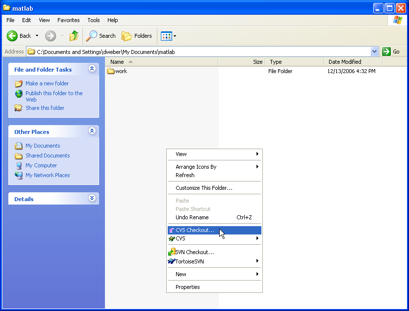
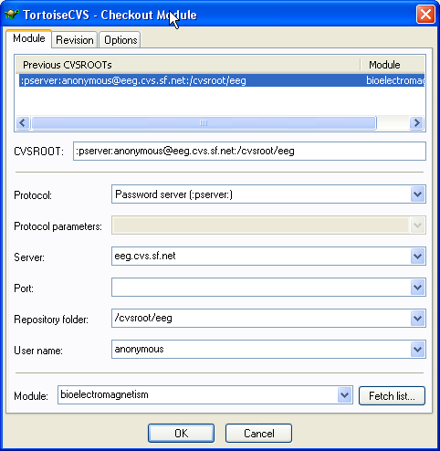
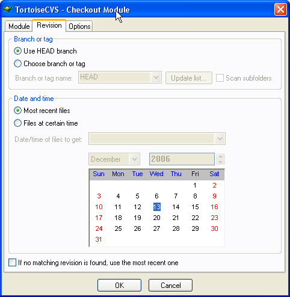
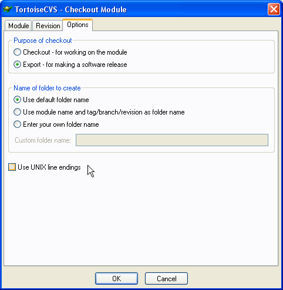
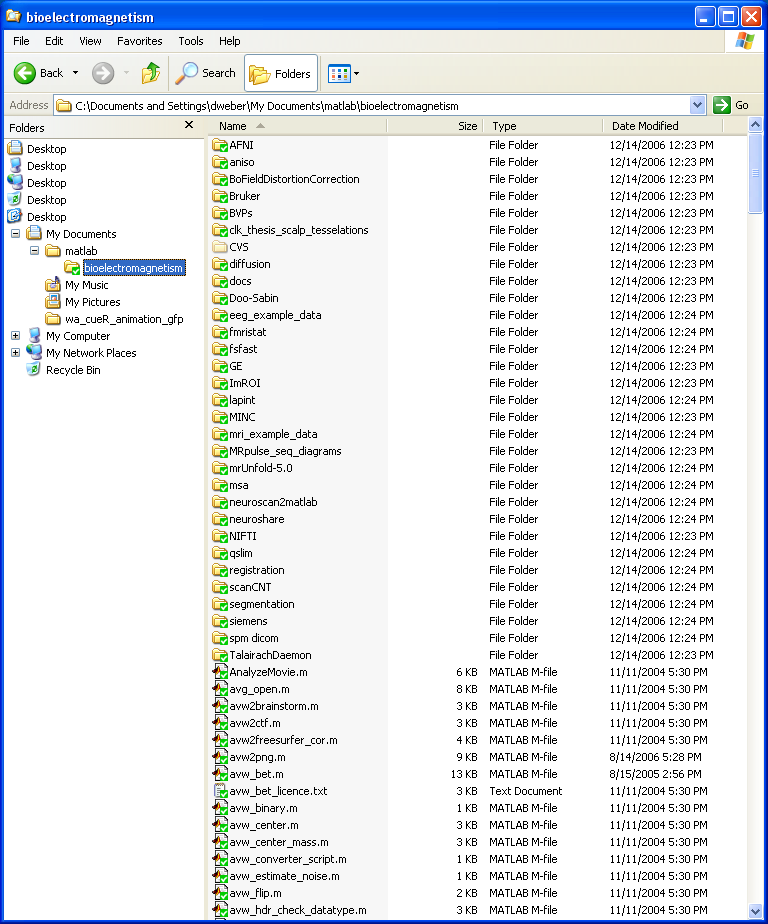

<!DOCTYPE HTML PUBLIC "-//W3C//DTD HTML 4.0 Transitional//EN" "http://www.w3.org/TR/REC-html40/loose.dtd">
<html>
<head>
<title>Using TortoiseCVS with http://eeg.sf.net</title>


<meta name="author" content="Darren Weber">
<meta http-equiv="Content-Type" content="text/html; charset=utf-8">

<style type="text/css">
</head>

<body>

<h2>Using TortoiseCVS with http://eeg.sf.net</h2>

<p>
This short how-to will help you download and keep updated on the
project files at http://eeg.sf.net/.  In about 5-10 min, depending on
your internet connection, you will have a working installation of
tortoiseCVS and a complete copy of any eeg.sf.net project files.
Although CVS provides many levels of sophistication for project
development, you can use the basic functions of CVS to manage your
files, even if you never plan to develop any files on the project! I
hope you enjoy the simplicity and efficiency of using tortoiseCVS!
</p>

<p>
Collaboration on an open source project often involves many people, in
diverse locations, writing similar or complementary project code at
the same time.  One way to do this, including concurrent edits on the
same file, is to use
 <a href="http://ximbiot.com/cvs/wiki/">CVS</a>, the <i>Concurrent
Versions System</i>.  All the code files are stored on a central CVS
repository, located on a central file server, available on an intranet
or the internet. Developers use a CVS program to connect to the server
and download or upload files. A great CVS program for Windows is <a
href="http://www.tortoisecvs.org/">TortoiseCVS</a>.
</p>


<h3>Get TortoiseCVS</h3>

<p>
At
<a href="http://www.tortoisecvs.org/">http://www.tortoisecvs.org</a>,
<a href="http://www.tortoisecvs.org/download.shtml">download</a> the
current version.  Run the setup wizard and you will soon have
TortoiseCVS hooked into Windows Explorer (after you reboot the
system).
</p>

<h3>Download the current project files</h3>

TortoiseCVS works right within Windows Explorer. Start by making a
folder on your computer where you want to keep the project files
(e.g., MyDocuments\matlab\).  Open this folder and right-click to view
the context menu - you will discover that TortoiseCVS adds some items
to the right-click menu - now choose <b>CVS Checkout</b>.

<br>
<br>
<br>
<br>

The <b>Checkout Module</b> dialog box appears (see below). Paste the
following text into the <b>CVSROOT</b> field:

<br>
<br>
<code>:pserver:anonymous@eeg.cvs.sf.net:/cvsroot/eeg</code>
<br>
<br>

This will fill many of the GUI fields automatically. In the
<b>Module</b> box at the bottom, type <i>bioelectromagnetism</i>.
(The modules to choose from are listed as root folders on the <a
href="http://eeg.cvs.sourceforge.net/">ViewCVS</a> page. Please note
that the 'eeg_toolbox' and the 'mri_toolbox' modules are no longer in
active development, because all of their project files are now
integrated into the 'bioelectromagnetism' module.)  With the dialog
boxes filled, you can now click <b>OK</b> to download the project!
(You should get a warning about using an empty password, which you can
ignore.)  Just before you do that, take a quick look at some notes
below on those other config tabs.

<br>
<br>

<br>
<br>


<b>Revision</b>: At present, there is only one revision, the HEAD
branch of the CVS repository.  In future, there may be alternative
RELEASE branches in the CVS repository and the download instructions
will indicate the tag for the latest RELEASE.  In that case, you may
need to specify the RELEASE branch TAG name.  (CVS provides options
for developers to take snapshots or branches of their repository.  The
main line or trunk of the development project is always the HEAD
branch.  Most often, branches are used to create snapshots of the
repository for specific public releases.  The eeg.sf.net project does
not need this level of sophistication at this time.)

<br>
<br>

<br>
<br>

<b>Options</b>: A useful option is to change the "checkout" into an
"export".  This is useful for anyone who wants a static copy of the
project, without any further CVS management of this copy (see below on
the facility to update the project using CVS).  Although CVS will not
manage or track any files in this export copy, it is still possible to
update because you can always delete all the files and export the
project again, at a later date.  For most users, the "checkout" option
will be the preferred method.

<br>
<br>

<br>
<br>


TortoiseCVS makes a subfolder for every folder in CVS and downloads
all of the the project files. In Windows Explorer, TortoiseCVS marks
the folders and files with green checkmarks because they are both on
the server and on your computer (unless you use the 'export' option,
see comment above). You can move and rename this folder without
breaking its connection to CVS.  Never delete the folders called 'CVS'
because they contain all the management information for CVS.  If you
do that, it will break the CVS connection to the repository.

<br>
<br>

<br>
<br>

<h3>Keep your copy of the code current</h3>

<p> You've installed TortoiseCVS, and had it download the project
files. But that was yesterday! The project developers have changed
some of the project files and uploaded more files (to get detailed
email notification about these changes, subscribe or view the archives
on the eeg-developers list). So now the copy on your hard drive isn't
current.  This is how to solve this problem with TortoiseCVS.  In
Windows Explorer, right-click the 'bioelectromagnetism' folder and
choose <b>CVS Update</b>. Tortoise CVS will update your copy - it will
update old project files (unless you changed them) and download new
project files from the CVS server.

<br>
<br>

</p>


<h3>What happens when someone edits a file?</h3>

Here's what the icon colors mean.

<p>

<b><span style="color: rgb(0, 204, 0);">Unmodified (Green)</span></b>
<br>
This file is the same on the CVS server.  If you download all the
source code, never edit any of it, and click <b>CVS Update</b> every
few days, all the files will stay <b><span style="color: rgb(0, 204,
0);">Unmodified</span></b>.
</p>

<p>
 
<b><span style="color: rgb(255, 153, 0);">Modified (Orange)</span></b>
<br>
If you edit a file, it will change to <b><span style="color: rgb(255,
153, 0);">Modified</span></b>. It's still safe to right-click and
choose <b>CVS Update</b>. TortoiseCVS won't eliminate your changes. It
will update all the <b><span style="color: rgb(0, 204,
0);">Unmodified</span></b> files and leave your <b><span style="color:
rgb(255, 153, 0);">Modified</span></b> file alone.  </p>

<p>

<b><span style="color: rgb(255, 51, 51);">Conflict (Red)</span></b>
<br>
You changed this file, and it also changed on the server.  If a
developer updates a file that you have already modified, and you want
to check it into the CVS repository, then your CVS file will not get
checked in. It will be marked <b><span style="color: rgb(255, 51,
51);">Conflict</span></b>. At this point, it's your job to merge your
changes with the changes from the server (you had better talk to the
other developer(s) who have modified that file).
</p>


<h3>Bugs, suggestions, and active contributions.</h3>

Please send email to eeg-users@lists.sf.net with any bug reports or
suggested changes for the project tools.  If you really want to
actively develop the tools, please request developer access to the CVS
service so you can checkin your changes (you will need to setup an
account on sourceforge).  Although active development is not trivial,
it is not impossible.


</body>
</html>
